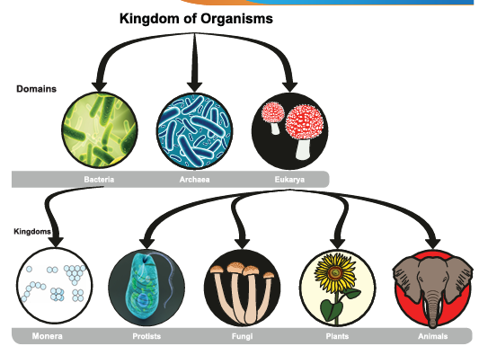
Description for the above picture begins, kingdom of organisms is classified in to three domains as Bacteria, Archaea, and Eukarya.
Bacteria is classified as Monera kingdom,
Eukarya is classified as kingdoms such as, Protists, Fungi, Plants and Animals. Description ends.
To understand the need for dichotomous classification
To classify animals according to their characteristic features
To know the classification of animals and get the knowledge about invertebrates and vertebrates
To acquire knowledge about the classification of plants.
To know the importance of five kingdom classification.
To understand the Binomial Nomenclature.
When you get ready to go to school, all your things, uniform, lunch box, water bottle, shoes etc., to be kept ready. Just imagine if all these things are not ready you will need to spend too much time to collect them. Likewise, in a grocery shop, medical shop and bakery all the items are systematically arranged. Sorting of things is very much required and important for all living beings. We see various plants and animals around us. It is estimated that about 8.7 million species of living organisms have been identified and named till now. However many scientists believe that, only a small portion of the total species existing on earth has been identified. In order to know about the behavior and relationship among organisms, that are known, biologists have classified them into two broad groups, plants and animals. Grouping of living organisms based on their common features is known as biological classification.
List out things found in your class room
Chair, Table, Black board, Chalk piece, Cupboard, Fan, Light, Switches, School bag, Lunch bag, Text book, Note book, Water bottle, Pencil box, Pencil, Pen, Rubber, Ruler, Door, window, Writing pad, Colour pencil, Eraser, Sharpener, Compass, and Chart papers.
1. Find out one common difference among these materials to classify the above things into two Wooden / Non Wooden
2. Find out another difference to classify each group into two sub groups Wooden sitting materials or Wooden writing materials and Non wooden sitting material or Non wooden writing materials.
3. Continue to identify differences to classify each small subgroups into two Fixed or Portable, With arm or Without arm.
There are some similarities and differences exist among these materials. So we need to observe and identify those similarities and differences to construct a dichotomous key. The dichotomous key allows us to make quick reference and identify a particular thing. Classification provides scientists a systematic easy way of studying organisms. Classification is done using this dichotomous key. What is dichotomous key? It is a tool used to classify organisms based on their similarities and differences.
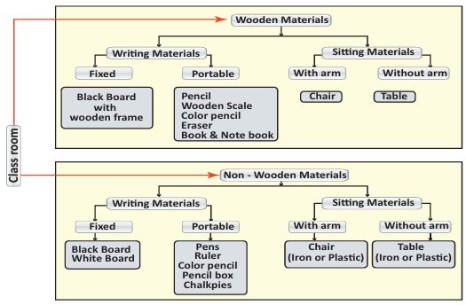
Description of the flow chart begins,
Materials are classified as wooden and non wooden materials.
Wooden materials are classified as writing materials and sitting materials.
Writing materials are classified as fixed and portable.
Fixed materials are black board with wooden frame.
Portable materials are pencil, wooden scale, colour pencil, eraser, book and note book.
Sitting materials are classified as with arm, example chair, and without arm, example table.
Non wooden materials are classified as writing and witting materials.
Writing materials are classified as fixed and portable,
Fixed materials are black board, white board. Portable materials are pens, ruler, colour pencil, pencil box, chalk piece.
Sitting materials are with arm example iron and plastic chair and without arm example iron and plastic table. Description of the flow chart ends.
Features of dichotomous key
• A single feature that differentiate a group easily.
• One character selected to separate the group, as present or absent.
• Continue the second step until only one item will remain at the end.
Dichotomy of Animals
Using a dichotomy pattern, classify the given list of animals, Ostrich, peacock, monkey, frog, toad, turtle, snake, shark, goldfish, ant, tapeworm, earthworm and leech.
1. Presence or absence of back bone, we can classify them into two groups.
2. Animals with back bone can be divided into its subgroup based on its body temperature.
3. Further classification can be done based on its difference like presence of feather or hair, scales etc.
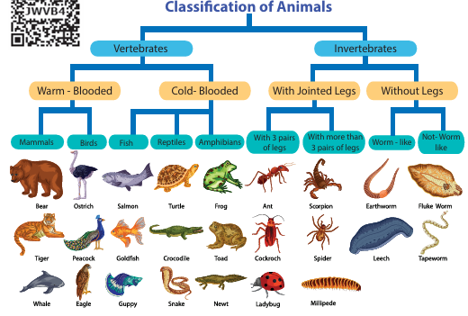
Description for the above flow chart begins,
Animals are classified as Vertebrates and Invertebrates,
Vertebrates are classified as warm blooded and cold blooded ,
Warm blooded are classified as mammals and birds, example for mammals are bear, tiger and whale. Example for birds are ostrich, peacock and eagle.
Cold blooded are classified as fish, reptiles and amphibians. Example for fish are salmon, gold fish and guppy. Example for reptiles are turtle, crocodile and snake, example for amphibians are frog, toad and newt.
Invertebrates are classified as with jointed legs and without legs.
With jointed legs are classified as with 3 pairs of legs and with more than 3 pairs of legs. Example for with 3 pairs of legs are ant, cockroach and ladybug. Example for with more than 3 pairs of legs are scorpion, spider and millipede.
Without legs are classified as worm like and not worm like. Example for worm like are earthworm and leech, example for not worm like are fluke worm and tapeworm.
Description for the above flow chart ends.
Living organisms are so large in number that they need to be classified into smaller groups. Classification of living organisms is made on the basis of their characteristics, similarities and differences.
Do you know begins,
Aristotle was a Greek philosopher and thinker who lived about 2400 years ago. Aristotle came up with the following grouping system that was used for almost 2000 years after his death!
• He classified all organisms into either animals or plants.
• Then he classified into those 'with blood' and those 'without blood'.
• Then the animals are classified into three groups based on their method of movement, walkers, flyers or swimmers.
ACTIVITY 1
Aim, To sort out a box of given buttons and classify them into different types.
Materials Required, A box full of different types of buttons.
Procedure,
1. Take a box of given buttons.
2. Work in small groups of three or four and classify the buttons based on the following classification criteria. (1) Shape (2) Buttons with four holes (2) Buttons with two holes. (4) Colour.
3. Identify other features that can be used to sort out buttons into different groups.
Based on the, special features and characters, the students identify each button, according to its size, hole and colour. This is known as identification. Then teacher shall ask students to separate the buttons according to the size, hole and colours. This is known as assortment.
After assorting the buttons the teacher ask the students to gather the buttons according to their, size, hole and colours. This is termed as grouping. Identification, assortment and grouping, which results in classification.
Classification
The method of arranging the organisms into groups is called classification. When we classify things we put them into groups based on their characteristics.
Why do we classify things?
1. Classifying things makes it easy for us to know their similarities and differences.
2. Things with similar characters are classified into same group. These things are usually similar in at least one characteristic.
3. Things with different characteristics are classified into different groups. These things are usually different in at least one characteristic.
4. Classification helps us to understand, living and non living things in better way. For example, we can classify a newly discovered organism, we would come to know, how it relates with other.
Need for Classification.
Classification is needed to identify an organism correctly.
It helps to know the origin and evolution of an organism. To establish the relationship among different organisms.
It provides the information about living things in different geographical regions.
It helps in understanding how complex organisms must have evolved from simpler ones.
Scientists have been able to discover and classify more than 2 million organisms on the earth ranging from tiny bacteria to the largest blue whales. Each organism has been classified in a category based on its evolutionary relationship with other group of organisms. We can define hierarchy of organisms as,
“The system of arranging taxonomic categories in a descending order based on their relationships with other group of organism is called hierarchy of categories”. This system was introduced by Linnaeus and is called Linnaean hierarchy. There are seven main categories of hierarchies namely, Kingdom, Phylum, Class, Order, Family, Genus and Species. Species is the basic unit of classification.
Based on the above classification the following table shows different phylum, with general features and examples of different phyla and classes.
General Characters |
Division |
Example pictures |
General Characters 1, Microscopic unicellular, pseudopodia, flagella and cilia for locomotion, reproduce by fission or conjugation. |
Division, Phylum Protozoa, Example. Amoeba, Euglena and Paramecium |
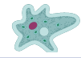 |
General Characters 2, Multicellular organisms with holes in the body. Skeleton formed of spicules, asexual and sexual reproduction. |
Division, Phylum Porifera, Example. Leucosolenia, Spongilla, Sycon. |
|
General Characters 3, Multicellular organisms Diploblastic, sessile or free swimming, solitary or colonial, asexual and sexual reproduction |
Division, Phylum Celenterata, Example. Hydra, Sea anemone, Jelly fish, Corals. |
|
General Characters 4, A celomates, parasites inside the body of animals and human beings, mostly hermaphrodite (bisexual). |
Division, Phylum Platyhelminthes, Example. Planaria, Liver fluke , Blood fluke, Tapeworm |
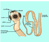 |
General Characters 5, Unsegmented body, mostly parasites in human beings and animals, causing diseases, asexual reproduction. |
Division, Phylum Aschelminthes or Nematoda Example. Ascaris lumbricoides |
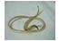 |
General Characters 6, Triploblastic, segmented body, mostly hermaphrodite (bisexual and unisexual). |
Division, Phylum Annelida, Example. Earthworm, Nereis, Leech. |
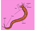 |
General Characters 7, Segmented body, thick chitinous cuticle forming an exoskeleton, paired and jointed legs, unisexual exhibits sexual dimorphism. |
Division, Phylum Arthropoda, Example. Crab, Prawn, Millipede, Insects, Scorpion, Spider |
|
General Characters 8, Soft bodied, unsegmented, muscular head, foot and visceral mass, mantle, a calcareous shell, sexual reproduction. |
Division, Phylum Mollusca, Example. Cuttle fish, Snail, Octopus |
|
General Characters 9, Exclusively marine, spines and spicules over the body, water vascular system, tube feet, for feeding, respiration and locomotion, sexual reproduction. |
Division, Phylum Ekino dermata, Example. Starfish, Sea Urchin, Brittle star, Sea cucumber and Sea lily |
Phylum, CHORDATES |
|
|
Phylum, CHORDATES ,General Characters 10, Aquatic, cold blooded vertebrates with boat shape body and jaws, locomotion by paired and median fins, sexual reproduction. |
Class Pises, Shark, Catla, Mullet, Tilapia |
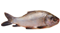 |
Phylum, CHORDATES ,General Characters 11, Amphibious, cold- blooded, two pairs of limbs, sexual reproduction. |
Class Amphibia, Example. Frog, Toad, Salamander, Caecilian |
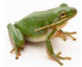 |
Phylum, CHORDATES ,General Characters 12, Cold blooded , lung breathing, scales over the body, pentadactyl limb, adapted for climbing, running and padding, oviparous. |
Class Reptilia, Garden lizard, House lizard, Turtles, Tortoise , Snakes, Crocodile |
|
Phylum, CHORDATES ,General Characters 13, Warm blooded, exoskeleton of feathers, flight adaptation, spongy bones with air cavities, powerful eyes, sexual reproduction, oviparous. |
Class Aves, Wader bird, Roller bird, Hoopoe bird, Parrot, Sparrow, Hen, Ostrich, Kiwi |
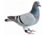 |
Phylum, CHORDATES ,General Characters 14, Terrestrial warm blooded, external ear or pinna, muscular diaphragm, non nucleated RBC, heterodont and diphyodont dentition, viviparous give birth to young ones. |
Class Mammalia, Duck bill Platypus, Kangaroo, Cat, Dog, Tiger, Zebra, Man |
Activity 2
Fill up the ten blanks with the suitable organisms given in the picture.
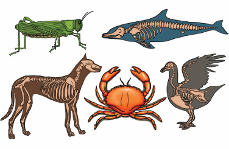
1. Vertebrates dash, dash and dash
2.Invertebrates dash, dash and dash.
3.Name the vertebrates with wings dash, dash.
4.Name the invertebrates with wings dash, dash
5.Name the invertebrates with segmented legs dash, dash
6.Name the invertebrates with Jointed legs dash, dash
7.Name the warm blooded vertebrates dash
8.Name the cold blooded vertebrates dash.
9.Name the vertebrates with lungs respiration dash, dash
10. Name the animal with beak dash.
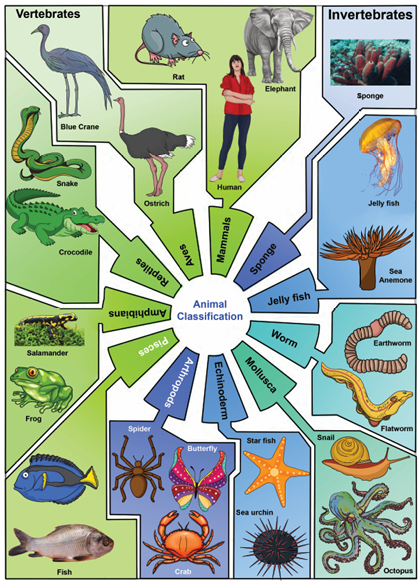
Description of the above picture begins, Animal classification is classified as vertebrates and Invertebrates.
Vertebrates are classified as mammals, example human, elephant and rat,
Aves, example ostrich, and blue crane,
Reptiles, example crocodile and snake,
Amphibians, example salamander and frog,
Pisces, example fish,
Invertebrates re classified as, sponge, example sponge,
Jelly fish, example sea anemone and jelly fish,
Worm, example earthworm and flatworm,
Mollusca, example snail and octopus,
Echinoderm, example star fish and sea urchin,
Arthropods, example spider, butterfly and crab. Description ends.
ACTIVITY 3
Given table shows the name of the phylum and its characteristic features. Write name of the animals belonging to the respective phylum. Table begins
Phylum |
Characters |
Example |
Phylum Porifera |
Characters, Pore bearers |
|
Phylum Coelenterate |
Characters, Gastro vascular cavity |
|
Phylum Platyhelminthes |
Characters, Flame cells |
|
Phylum Aschelminthes |
Characters, Thread like worm |
|
Phylum Annelida |
Characters, Body is segmented |
|
Phylum Arthropoda |
Characters, have jointed legs |
|
Phylum Mollusca |
Characters, Soft bodied with shells |
|
Phylum Echinodermata |
Characters, Spines on the skin |
|
Phylum Kardata |
Characters, Have back bone |
|
Table ends.
Have back bone Based on dichotomy, plants also can be classified into two main groups seed producing plant and Non seed producing plant. Non seed producing plants do not produce seeds and seed producing plants produce seeds. Based on their nature of plant body, Non seed producing plants are classified into three types, algae, mosses and ferns. Based on their fruit body, seed producing plants are classified into two types: gymnosperms and angiosperms.
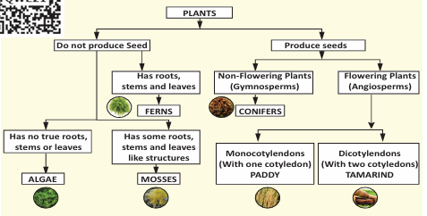
Description of the flow chart begins,
Plants are classified as two types, they are Do not produce seeds, produce seeds.
Plants which do not produce seeds are further classified as has roots, stem and leaves, example ferns. Those plants which has no true roots, stems or leaves example Algae. The plant has some roots, stems and leaf like structures, example mosses.
Plants which produce seeds are classified as non flowering plants that is gymnosperms, example Conifers, and flowering plants that is Angiosperms. Angiosperms are further classified as monocotyledons that is with one cotyledon, example paddy, and dicotyledons that is with two cotyledons example tamarind. Description ends.
Algae
Plant is thallus, not well differentiated into root, stem, and leaves.
They are predominantly aquatic.
They are unicellular or multicellular filamentous. Example, Chara.
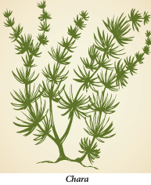
Mosses
Plant body is not differentiated into true root, stem and leaves.
They are water living plants, needs moisture to complete its life cycle. Hence they are referred to as amphibious plants.
They do not have any specialized vascular tissues for conduction of water and food. Examples, Funaria.
Ferns
Plant body is well differentiated into root, stem, and leaves. Leaves may be large or small.
Specialized vascular tissues are found for the conduction of water and food.
Basically they are the first land plants which grows well in shady, moist, and cool places. (Examples, Adiantum).
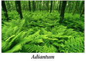
Gymnosperms
Plants are perennial, woody, evergreen with true root, stem and leaves.
They possess vascular tissues, xylem without vessels and phloem without companion cells.
Ovules are naked, without ovary. Hence they do not produce fruits. Seeds are naked. (Examples, Pinus, Cycas)
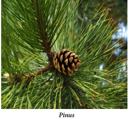
Angiosperms
Plant body is well differentiated into true root, stem, and leaves.
They produce flower with four whorls (calyx, corolla, androecium and gynoecium), hence known as flowering plants.
Female reproductive organ, ovary is present inside the flower which develops into fruit and ovule develops into seed.
Plant possess well developed vascular system with xylem vessels and phloem companion cells.
Angiosperms are the dominant plant forms of present day. Based on the number of cotyledons, angiosperms are broadly divided into two groups. a) monocotyledons b) dicotyledons. Plant seeds which have only one cotyledon are said to be monocots. Plant seeds which have two cotyledons are known as dicots. Example Paddy, (monocot), Tamarind, (dicot).
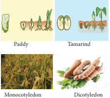
The five kingdom classification was proposed by R.H. Whittaker in 1969. Five kingdoms were formed on the basis of characteristics such as cell structure, mode of nutrition, source of nutrition and body organization.
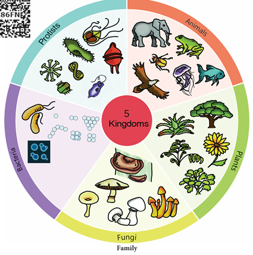
Description for the picture begins, picture representing five kingdom classification is given, they are,
1.Monera or Bacteria, example pictures are coccus and bacillus type bacteria,
2.Protis, example pictures are amoeba, paramecium, euglena, diatoms.
3.Fungi, example pictures are, different types of fungi like agaricus, bracket fungi. Description ends.
4.Plants, example pictures are trees, sun flower, small plants, aloe vera.
5.Animals, example pictures are elephant, fish, eagle, frog, beetle and jelly fish.
Monera
Kingdom Monera, Bacteria
All prokaryotes belong to the Kingdom Monera, which do not possess true nucleus. Cells of prokaryotes do not have a nuclear membrane and any membrane bound organelles. Most of the bacteria are heterotrophic, but some are autotrophs. Bacteria and Blue green algae are examples for Monera.
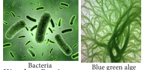
Kingdom Protista
The Kingdom Protista includes unicellular and a few simple multicellular eukaryotes. There are two main groups of protists. The plant like protists are photosynthetic and are commonly called algae. Algae include unicellular and multicellular types. Animals like protists are often called protozoans. They include Amoeba and Paramecium.
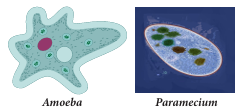
Kingdom Fungi
Fungi are eukaryotic, and mostly are multicellular. They secrete enzymes to digest the food and absorb the food after digested by the enzymes. Fungi saprophytes as decomposers (decay causing organisms) or as parasites. Kingdom Fungi includes molds, mildews, mushrooms and yeast.
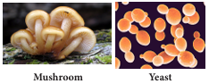
Kingdom Plantae
Planatae (plants) are multicellular eukaryotes that carry out photosynthesis. Plant cells have cell wall and specialized functions, such as photosynthesis, transport of materials and support. Kingdom Plantae includes ferns, cone bearing plants and flowering plants.
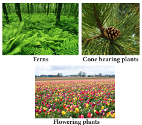
Kingdom Animalia
Animalia (animals) are multicellular, eukaryotic and heterotrophic animals. Cells have no cell wall. Most members of the animal kingdom can move from place to place. Example, Invertebrates like sponges, hydra, flatworms round worms, insects, snails, starfishes. Vertebrates like Fish, amphibians, reptiles, birds, and mammals including human beings belong to the kingdom Animalia.
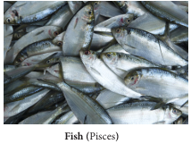
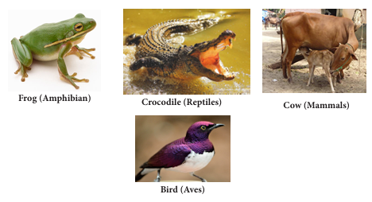
IMPORTANT CHARACTERISTICS OF FIVE KINGDOMS, table begins,
Characteristics |
Monera |
Protista |
Fungi |
Plantae |
Animalia |
Characteristics 1, Cell type |
Cell type of Monera is Unicellular, Prokaryotic. |
Cell type of Protista is Unicellular, Eu karyotic. |
Cell type of Fungi is, Multicellular, Non green and Eukaryotic. |
Cell type of Plantae is Multicellular, Eukaryotic. |
Cell type of Animalia is Multicellular, Eukaryotic. |
Characteristics 2, Nucleus |
Nucleus Absent in Monera |
Nucleus Present in Protista, |
Nucleus Present in Fungi |
Nucleus Present in plantae
|
Nucleus Present in Animalia |
Characteristics 3, Body oganisation |
In Monera, body organisation is Cellular level of organization |
In Protista, body organisation is Cellular level of organization |
In Fungi, body organisation is Multi cellular with loose tissue. |
In Plantae body organisation is Tissue level and organ level. |
In Animalia body organisation is Tissue, organ and organ system. |
Characteristics 4, Mode of nutrition |
Mode of nutrition in Monera is, Auto (or) Heterotrophic. |
Mode of nutrition in Protista is, Auto (or) Heterotrophic. |
Mode of nutrition in Fungi is Saprophytic, parasitic some time symbiotic |
In Plantae Mode of nutrition is Autotrophic. |
In Animalia Mode of nutrition is Heterotrophic. |
Characteristics 5, Example |
Example for Monera, Bacteria and Blue green algae. |
Example for Protista, Spairo gyra and Clamydo monas |
Example for Fungi, Rhizopus and Agaricus. |
Example for Plantae, Herb, Shrub and Trees. |
Example for Animalia, Fish, frog, crocodile, Birds and human being |
Merits of five Kingdom Classification
This system of classification is more scientific and natural.
This system of classification clearly indicates the cellular organization, mode of nutrition, and characters for early evolution of life.
It is the most accepted system of modern classification as the different groups of organisms are placed phylogenetically.
It indicates gradual evolution of complex organisms from simpler one.
Demerits of five Kingdom Classifications
In this system of classification of viruses have not been given a proper place.
Multicellular organisms have originated several times from protists.
This type of classification has drawn back with reference to the lower forms of life.
Some organisms included under Protista are not eukaryotic.
Gaspard Bauhin in 1623, introduced naming of organisms with two names which is known as Binomial nomenclature, and it was implemented by Carolus Linnaeas in 1753. He is known as ‘Father of Modern Taxonomy’.
Binomial nomenclature is an universal system of naming organisms. As per this system, each organism has two names, the first is the Genus name and the second is the Species name. Genus name begins with a capital letter and Species name begins with a small letter.
Example, The nomenclature for onion is Allium sativam. Genus name is Allium, species name is sativam.
Vernacular name is a local name that is familiar for a particular place. Binomial name is an universal name which never changes. Binomial nomenclature and classification helps scientists to identify any organisms and to place them at a particular hierarchy.
ACTIVITY 4
Field trip to sanctuaries or zoo should be arranged. Students are guided to observe the animals and explain about the feature of animals how they are protected and maintained in the zoo. Note the displayed names of the plants and animals. Discuss your observation in the class.
Do you know Table begins, Common name and Scientific Name of Some Organisms.
Commom name |
Scientific Name |
1, Human being |
Homo sapiens |
2, Onion |
Allium sativum |
3, Rat |
Rattus rattus |
4, Pigeon |
Columba livia |
5, Tamarind |
Tamirindus indica |
6, Lime |
Citrus aurantifolia |
7, Neem tree |
Azadirachta indica |
8, Frog |
Rana hexadactyla |
9, Coconut |
Cocos nucifera |
10, Paddy |
Oryza sativa |
11, Fish |
Catla catla |
12, Orange |
Citrus sinensis |
13, Ginger |
Zingiber officinale |
14, Papaya |
Carica papaya |
15, Date |
Phoenix dactylifera |
Do you know table ends.
POINTS TO REMEMBER
1, The following characteristics are essential for classification.
(a) Similarities
(b) Differences
(c) Both of them
(d) None of them
2, Approximately DASH species of living organisms found in the earth.
(a) 8.7 million
(b) 8.6 million
(c) 8.5 million
(d) 8.8 million
3, The largest division of the living world is DASH
(a) Order
(b) Kingdom
(c) Phylum
(d) Family
4, Who proposed the five kingdom of classification?
(a) Aristotle
(b) Linnaeus
(c) Whittaker
(d) Plato
5, The binomial name of pigeon is DASH.
(a) Homo sapiens
(b) Rattus rattus
(c) Mangifera indica
(d) Columbo livia
1, DASH in 1623, introduced the binomial nomenclature.
2, Species is the DASH unit of classification.
3, DASH are non green and non photosynthetic in nature.
4, The binomial name of onion is DASH.
5, Carolus Linnaeus is known as the Father of DASH.
1, Classification helps to know the origin and evolution of an organism.
2, Fishes are aquatic vertebrates.
3, In the year 1979, Five kingdom classification was proposed.
4, True nucleus is seen in prokaryotic cell.
5, Animal cells have cell wall.
1, Monera, Moulds
2, Protista, Bacteria
3, Fungi , Neem
4, Plantae, Butterfly
5, Animalia, Euglena
1, Assertion, Binomial name is the universal name and contains two names.
Reason, It was first introduced by Carolus Linnaeus
a. Assertion is correct, Reason is correct
b. Assertion is correct, Reason is incorrect
c. Assertion is incorrect Reason is correct
d. Assertion and Reason are incorrect
2, Assertion, Identification, assortment and grouping are essential for classification
Reason, These are basic steps of taxonomy
a. Assertion is correct, Reason is correct
b. Assertion is correct, Reason is incorrect
c. Assertion is incorrect Reason is correct
d. Assertion & Reason is incorrect.
1, What is classification?
2, List out the five kingdoms classification
3, Define, dichotomous key
4, Write two examples of Monera.
5, What is binomial nomenclature?
6, Write the binomial name of a) Human being b) Paddy
7, Write two features of Protista.
1, Write the levels of classification.
2, Differentiate plantae and animalia
3, Write any two merits of Five Kingdom classification.
1, Explain about five kingdom classification
2, Write short notes on, Binomial Nomenclature.
3, Give an account on the classification of invertebrates with few general features and examples.
Which kingdom has saprophytic, parasitic and symbiotic nutrition. Why?
Pictures of some living organisms are given below. Identify the kingdom to which each of these belong and write the kingdom name in the blanks provided.
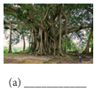
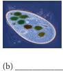
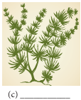
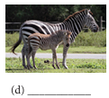
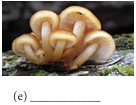
This activity enables the students to identify vertebrates And invertebrates.
PROCEDURE,
Step 1, Type the URL link given below in the browser or scan the QR code. A page opens with tiny tap and “PLAY” button
Step 2, Click it, it opens into another page
Step 3, The page shows animals with the words “Invertebrate or vertebrate” in a box near the animal
Step 4, When you click the correct option vertebrate or invertebrate it goes to next picture
Classification URL,
https://www.tinytap.it/activities/g1fca/play/vertebrates-and-invertebrates
Pictures are indicative only,
If browser requires, allow Flash Player or Java Script to load the page.